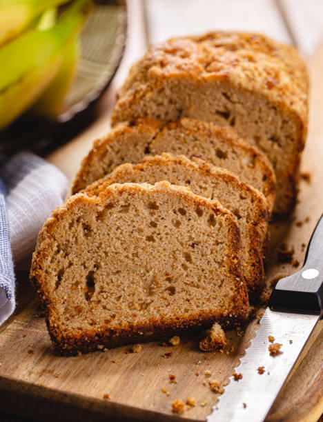

Banana Bread

Description
This banana bread recipe is a classic favorite, perfect for using up overripe bananas. It's moist, flavorful, and easy to make. Enjoy it as a breakfast treat or a snack any time of the day!
Ingredients
- 3 ripe bananas, mashed
- 1/3 cup melted butter
- 1 teaspoon baking soda
- Pinch of salt
- 3/4 cup sugar (can be reduced to 1/2 cup for less sweetness)
- 1 large egg, beaten
- 1 teaspoon vanilla extract
- 1 1/2 cups all-purpose flour
Steps
- Preheat your oven to 350°F (175°C).
- In a mixing bowl, mash the ripe bananas with a fork until smooth.
- Stir in the melted butter until well combined.
- Add the baking soda and salt, mixing well.
- Stir in the sugar, beaten egg, and vanilla extract until fully incorporated.
- Gradually add the flour, mixing until just combined. Do not overmix.
- Pour the batter into a greased 4x8-inch loaf pan.
- Bake in the preheated oven for 60-65 minutes, or until a toothpick inserted into the center comes out clean.
- Let the banana bread cool in the pan for about 10 minutes, then transfer it to a wire rack to cool completely.
- Slice and enjoy your homemade banana bread!
Home